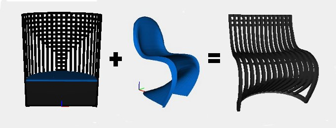
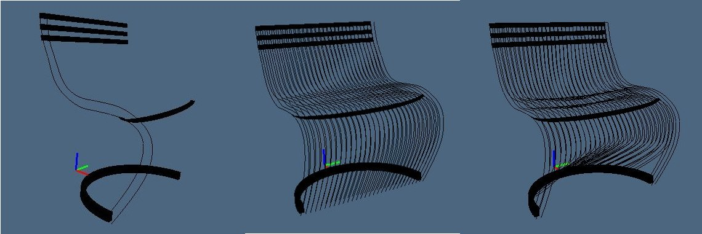
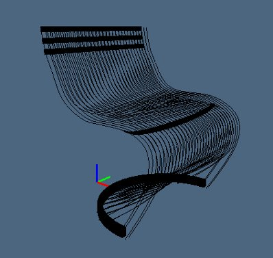
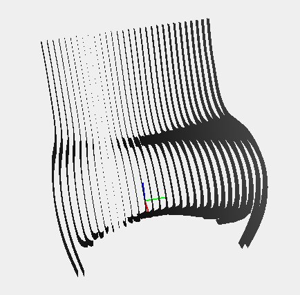
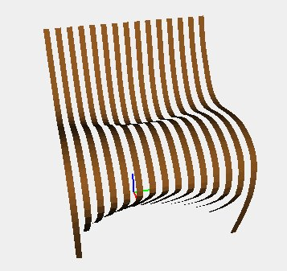
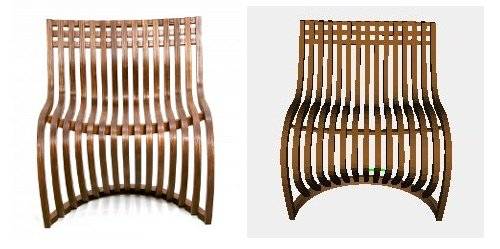

Lattoog, Pantosh Chair, 2008

By a mechanism similar to the modeling of the panton chair, I decided to use a single starting array of points that given as input to the function vertical allows to obtain the vertical components of the chair.
function vertical(p){
var v = vett_traslX();
var p0 = trasla_y(p);
var p1 = trasla_x0(p0,v);
var p2 = trasla_param(p1,1,2,0.15,2);
var p3 = trasla_param(p2,3,4,-0.05,0);
var p4 = trasla_param(p3,6,9,-0.05,0);
var p5 = trasla_param(p4,6,9,-0.1,2);
var p6 = trasla_z(p5,0.25);
return p6;
};

The function trasla_y is the same function used for the panton chair model, so it generates the array of arrays of points by shifting by a fixed amount along the y axis.
To translate the abscissas of the base instead of using a given vector, I used a function called vett_traslX; this function calculates automatically the values of the translation vector using the equation of circumference, thus allowing to obtain the circular base.
I also modified the method trasla_fix, used previously: the quantity of which each point is translated is not fixed, but it depends on the ordinate in which the single array of points is located; in this way I managed to obtain concavities in some points of interest. Moreover, the arrays of points must be translated in pairs of the same quantity beacause every couple of array defines a single vertical component of the chair. The new version of the method is the following:
function trasla_param(points,k1,k2,t,d){
var p = points;
var j = t;
for(i=2; i<16; i++){
for(k=k1;k<k2;k++){
if (i==14){
p[i][k][d] = p[i-2][k][d];
p[i+1][k][d] = p[i-2+1][k][d];
}
else {
p[i][k][d] = p[i][k][d]+ j;
p[i+1][k][d] = p[i+1][k][d]+ j;
p[points.length-2-i][k][d] = p[points.length-2-i][k][d]+j;
p[points.length-2-i+1][k][d] = p[points.length-2-i+1][k][d]+j;
}
}
j = j + t;
i++;
}
return p;
};
Applying this function several times we obtain the following model:

Once obtained the baselines I apply to them two functions: the first generates the depth of the vertical components and the second the width, considering the arrays of points in pairs.
function depth(p0,p1){
var a0 = vertical(p0);
var a1 = vertical(p1);
var p = [];
for(i=0; i<30; i++){
knots0 = nodes(a0[i]);
knots1 = nodes(a1[i]);
cp0 = NUBS(S0)(2)(knots0)(a0[i]);
cp1 = NUBS(S0)(2)(knots1)(a1[i]);
p[i] = BEZIER(S1)([cp0,cp1]);
}
return p;
};

function width(points){
var p = [];
var j = 0;
for(i=0; i<30; i++){
knots0 = nodes(points[i]);
knots1 = nodes(points[i+1]);
cp0 = NUBS(S0)(2)(knots0)(points[i]);
cp1 = NUBS(S0)(2)(knots1)(points[i+1]);
p[j] = BEZIER(S1)([cp0,cp1]);
i++;
j++;
}
return p;
};
Adding horizontal parts, in a much more simple way, I get the following model in javascript:

View javascript code